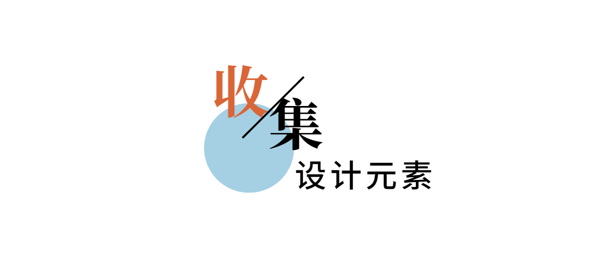
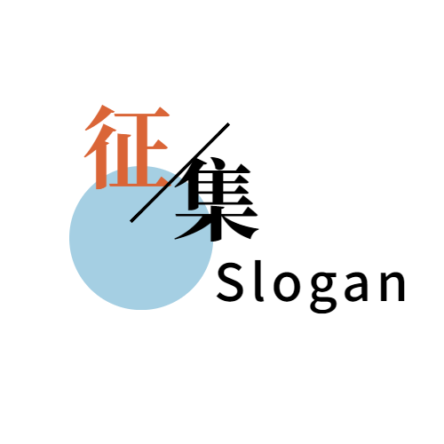
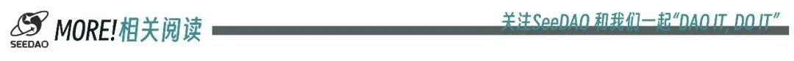

亲爱的SeeDAO小伙伴们，
Seed PMO团队正热切征集关于Seed NFT设计元素和Slogan的建议。Seed是SeeDAO的SGN升级计划，我们希望更好地满足SeeDAO品牌的需求。新版SGN视觉由设计师“西”重新阐释了“SeeDAO”的意义，强调东方精神，宁静、和谐与天人合一🎋。
我们期待听到社区成员对于Seed设计元素和Slogan的宝贵建议。

我们提供了一个“设计元素收集”的Notion文档，其中罗列了可能使用的Seed NFT设计元素。这些元素包括自然元素🌿，中国风图案，神话&宗教元素🐉，食物素材，西方抽象元素🌐，佛教符号🕉️和亚洲不同国家的图形象征等。
我们欢迎社区成员在对应的各个类别中添加新的元素，简单说明添加原因。我们将认真考虑每一条建议，并在最终设计中加以采纳🤝。
<<<<<<<
提交方式：此处提交
🔗https://www.notion.so/seedao/Seed-5541fd602a4c4d3e93c5ea81a880346d?pvs=4
收集时间：6月22日至6月29日📅

Slogan将用于Seed NFT在全球的推广🌍、Seed NFT网站🌐、Opensea介绍及社交媒体等。这是一个展示您创造力和才华的绝佳机会💫！
<<<<<<<
要求：提供一个英文的Slogan，并附300字以内的中文说明。
提交方式：此处提交
🔗https://forms.gle/9BvAVMk4xCVqB13m8
我们期待
您的参与！
